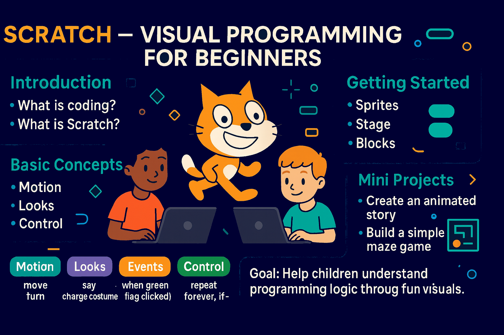
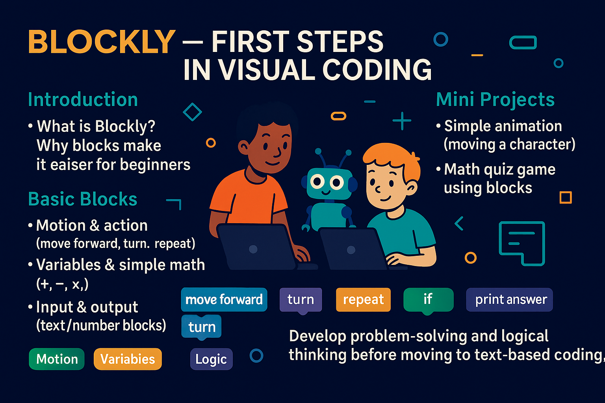

Basic Programming Lessons in Scratch & Blockly (2024)
1 Scratch – Visual Programming for Beginners
- Introduction to Scratch: What is coding? What is Scratch?
- Getting Started: Sprites, stage, and blocks
- Basic Concepts:
- Motion blocks (move, turn)
- Looks blocks (say, change costume)
- Events (when green flag clicked)
- Control (repeat, forever, if-then)
- Mini Projects:
- Create an animated story
- Build a simple maze game
- Goal: Help children understand programming logic through fun and visuals

2 Blockly – First Steps in Visual Coding

- Introduction to Blockly: What is Blockly? Why block-based coding makes it easier for beginners.
- Basic Blocks:
- Motion and action blocks (move forward, turn, repeat)
- Variables and simple math operations (add, subtract, multiply, divide)
- Input and output using text or number blocks
- Logic & Control:
- If–then blocks (decision making)
- Loops (repeat, repeat until, while)
- Mini Projects:
- Build a simple animation (moving a character)
- Create a math quiz game using blocks
- Goal: Develop problem-solving and logical thinking in a fun, visual way before moving on to text-based coding.
Integrated Learning Approach
- Encourage creativity by letting students design their own projects in Scratch and Blockly (e.g., interactive stories, small games, quizzes).
- Show students how the logic and structures they learn in Blockly can also be applied in Scratch, helping them strengthen problem-solving skills across both platforms.
- Combine coding challenges with chess-inspired puzzles to enhance logical reasoning, concentration, and creativity.